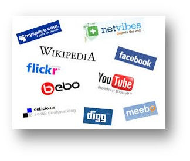
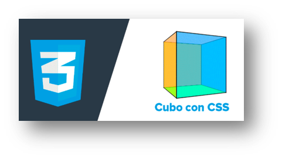
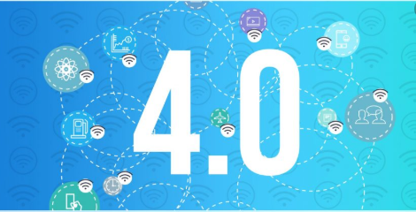
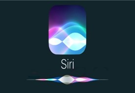

| 2001 |
Llegada de la Web 2.0
Permite a los usuarios interactuar y colaborar entre sí como creadores
de contenido generado por usuarios en una comunidad virtual.
|
 |
| 2004 |
Red Social Facebook
Facebook se convirtió en el medio de
comunicación social más visitado
|
|
| 2005 |
Plataformas de video en linea
Febrero de 2005 se crea YouTube,
un sitio de internet para subir y
visualizar videos en línea.
|
|
| 2006 |
AJAX
Asynchronous JavaScript And XML, es
una técnica de desarrollo web para
crear aplicaciones interactivas
|
|
|
Llegada de la web 3.0
Se introdujo la web semántica, usando lenguaje natural haciendo de la
navegación adaptable a los gustos del usuario
|
 |
| 2009 |
Transformaciones 3D
Se comienzan a añadir transformaciones 3D a las
aplicaciones web utilizando CSS3
|
 |
|
Llegada de la web 4.0
También llamada ubicua,añadiendo mas aplicaciones con I.A., reconocimiento de voz, etc
|
 |
| 2011 |
Cloud Computing
Surge permitiendo acceso remoto a softwares, almacenamiento de
archivos y procesamiento de datos por medio de Internet
|
|
| 2013 |
Se añade la IA y Deep learning
Se comienzan a crear aplicaciones web que hacen uso de Inteligencia Artificial, haciendo
predicciones o recomendaciones mas inteligentes
|
|
| 2016 |
Speech-to-text
La comprensión del lenguaje y la capacidad de procesar una orden ,
utilizado en asistentes de voz
|
 |